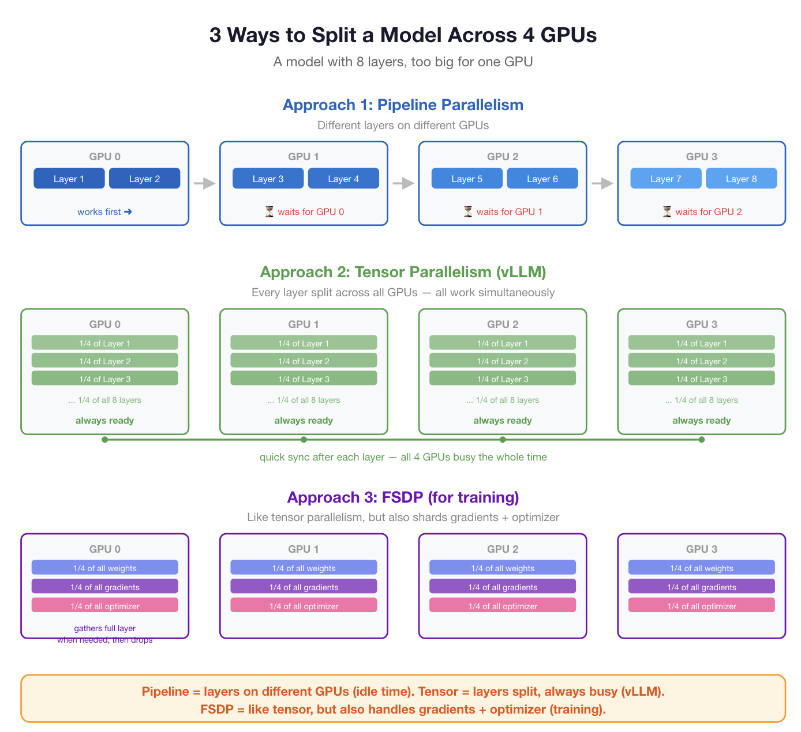
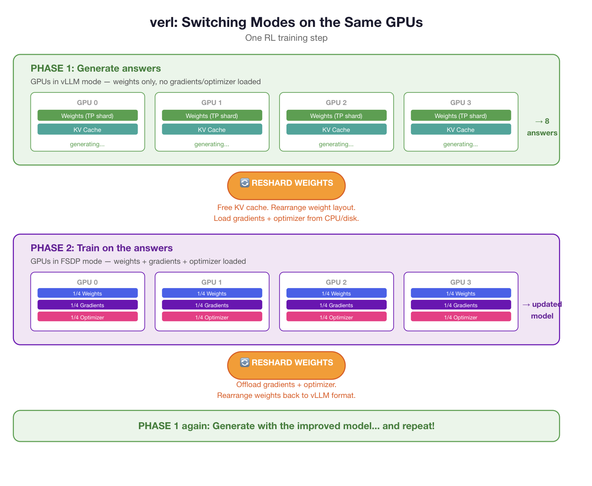
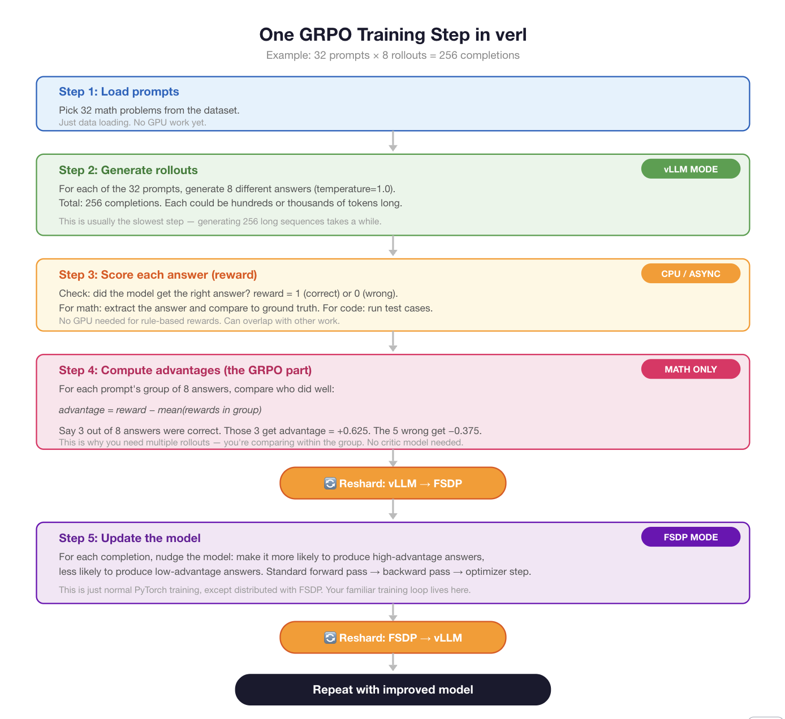
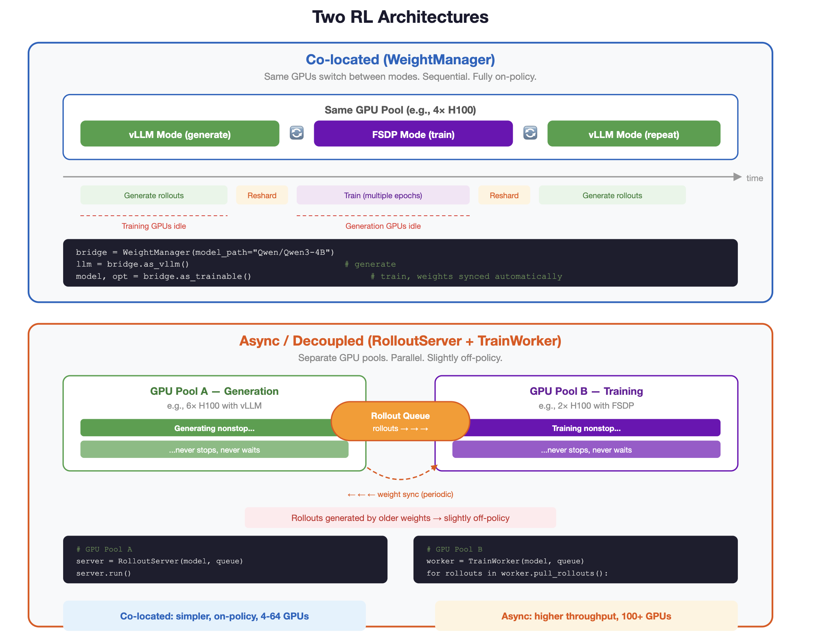

Designing your own RL engine
In this post, we’ll guide you step by step through designing your own asynchronous, distributed reinforcement learning (RL) engine purpose-built for post-training large language models (LLMs). Techniques like RLHF (Reinforcement Learning from Human Feedback), RLVR, and RLFT (Reinforcement Learning from various feedback signals) have become central to advancing LLM capabilities, yet often seem like black magic. Here, we’ll peel back the curtain and construct a principled, modular RL post-training system from the ground up.
Why pursue this?
- Gain a deep understanding of the core components that power modern RL pipelines for LLMs
- Develop the flexibility to customize, extend, and debug RL-based systems to fit your unique needs and experiments
- Demystify complex RL post-training techniques such as RLHF, RLVR, and RLFT by building them piece by piece
- Empower your team with a reproducible, modular framework that can scale from prototypes to production
Setting the grounds: standard GRPO
In raw PyTorch, you’d do something like this:
import torch
from transformers import AutoModelForCausalLM, AutoTokenizer
# 1. Load model
model = AutoModelForCausalLM.from_pretrained("Qwen/Qwen3-4B")
ref_model = AutoModelForCausalLM.from_pretrained("Qwen/Qwen3-4B") # frozen copy
tokenizer = AutoTokenizer.from_pretrained("Qwen/Qwen3-4B")
optimizer = torch.optim.Adam(model.parameters(), lr=1e-6)
# 2. Reward function
def reward_fn(completion, ground_truth):
answer = extract_answer(completion)
return 1.0 if answer == ground_truth else 0.0
# 3. Training loop
for batch in dataloader:
prompts = batch["prompt"]
truths = batch["ground_truth"]
# === GENERATE ROLLOUTS ===
G = 8 # rollouts per prompt
all_completions = []
all_old_logprobs = []
model.eval()
with torch.no_grad():
for prompt in prompts:
input_ids = tokenizer(prompt, return_tensors="pt").input_ids
for _ in range(G):
# sample a completion
output = model.generate(input_ids, temperature=1.0, max_new_tokens=1024)
completion_ids = output[:, input_ids.shape[1]:]
# record log-probs under current (old) policy
logits = model(output).logits[:, input_ids.shape[1]-1:-1, :]
logprobs = torch.log_softmax(logits, dim=-1)
token_logprobs = logprobs.gather(2, completion_ids.unsqueeze(2)).squeeze(2)
all_completions.append(completion_ids)
all_old_logprobs.append(token_logprobs)
# === COMPUTE REWARDS AND ADVANTAGES ===
rewards = []
for i, prompt in enumerate(prompts):
for g in range(G):
text = tokenizer.decode(all_completions[i * G + g][0])
rewards.append(reward_fn(text, truths[i]))
# group advantages: A_i = r_i - mean(group)
advantages = []
for i in range(len(prompts)):
group_rewards = rewards[i * G : (i + 1) * G]
mean_r = sum(group_rewards) / G
for r in group_rewards:
advantages.append(r - mean_r)
# === POLICY GRADIENT UPDATE ===
model.train()
epsilon = 0.2
total_loss = 0
for idx in range(len(all_completions)):
completion_ids = all_completions[idx]
old_logprobs = all_old_logprobs[idx]
A = advantages[idx]
# forward pass through CURRENT model
logits = model(completion_ids).logits[:, :-1, :]
logprobs = torch.log_softmax(logits, dim=-1)
new_logprobs = logprobs.gather(2, completion_ids[:, 1:].unsqueeze(2)).squeeze(2)
# ratio
ratio = torch.exp(new_logprobs - old_logprobs)
# clipped loss
unclipped = ratio * A
clipped = torch.clamp(ratio, 1 - epsilon, 1 + epsilon) * A
loss = -torch.min(unclipped, clipped).mean()
total_loss += loss
# standard PyTorch update — the familiar part
optimizer.zero_grad()
total_loss.backward()
optimizer.step()but… this is a problem because:
- slow, will it vram issues
- does not separate training and sampling.
- In sampling, we want TP, but in training we want FSDP.
- We can do this on two nodes separately and not have to worry but what if you only have one node?
- Thus, we design a system that takes the above code and extends it to doing async, dual training-generation
- we will build an api from the ground up that wraps the above code and produces the desired logic
- we extend it all the way to async rl in the form of pipelinerl.
- this ends up being a drop in replacement for the likes of verl.
- we use vLLM (inference) and PyTorch DDP (training) in the backend to make everything work.
That’s literally what verl is. vLLM for generation (fast, returns log-probs for free), then switches to PyTorch/FSDP for the training step. You’ve just reinvented the motivation for verl from first principles.
You could wire this up yourself — use vLLM as a separate inference server, collect rollouts + log-probs, then feed them into a PyTorch training loop. But you’d have to handle:
- Loading/unloading weights between vLLM and PyTorch
- Keeping the weights in sync after each optimizer step
- Managing GPU memory between the two modes
- Sharding for models that don’t fit on one GPU
That’s all the plumbing verl handles for you. The actual GRPO math inside verl’s training step is the same PyTorch code you already understand.
But guess what… we are going to do it anyway to (1) learn!; (2) offer flexibility in the underlying abstractions.
Quick primer

what verl would do…

and the overall pipeline we need to follow to do GRPO:

Extending GRPO to async RL
so how can we take the naive GRPO loop above and modify it to satisfy the desired points we set above? Perhaps something like this:
import asyncio
import uuid
import torch
import torch.distributed as dist
from torch.nn.parallel import DistributedDataParallel as DDP
from torch.nn.functional import log_softmax
from transformers import AutoModelForCausalLM, AutoTokenizer
from vllm import AsyncLLMEngine, SamplingParams
from vllm.engine.arg_utils import AsyncEngineArgs
import os
# ─────────────────────────────────────────────
# CONFIG
# ─────────────────────────────────────────────
MODEL_NAME = "Qwen/Qwen3-4B"
G = 8 # rollouts per prompt
B = 4 # prompts per training batch
EPSILON = 0.2
LR = 1e-6
SYNC_EVERY = 1 # weight sync frequency (gradient steps)
MAX_QUEUE = 32 # bounded rollout buffer
# ─────────────────────────────────────────────
# REWARD
# ─────────────────────────────────────────────
def extract_answer(text: str) -> str:
# placeholder — replace with your actual parser
import re
match = re.search(r"#### (.+)", text)
return match.group(1).strip() if match else ""
def reward_fn(completion: str, ground_truth: str) -> float:
return 1.0 if extract_answer(completion) == ground_truth else 0.0
# ─────────────────────────────────────────────
# ADVANTAGES
# ─────────────────────────────────────────────
def compute_group_advantages(rewards: list[float], g: int) -> list[float]:
advantages = []
n_prompts = len(rewards) // g
for i in range(n_prompts):
group = rewards[i * g : (i + 1) * g]
mean_r = sum(group) / g
std_r = (sum((r - mean_r) ** 2 for r in group) / g) ** 0.5 + 1e-8
for r in group:
advantages.append((r - mean_r) / std_r)
return advantages
# ─────────────────────────────────────────────
# WEIGHT SYNC: trainer → vLLM
# ─────────────────────────────────────────────
async def sync_weights_to_vllm(model: DDP, vllm_engine: AsyncLLMEngine):
state_dict = {k: v.cpu() for k, v in model.module.state_dict().items()}
# vLLM 0.4+ exposes update_weights on the executor
await asyncio.get_event_loop().run_in_executor(
None,
vllm_engine.engine.model_executor.update_weights,
state_dict,
)
# ─────────────────────────────────────────────
# TRAINING STEP
# ─────────────────────────────────────────────
def grpo_update(
model: DDP,
optimizer: torch.optim.Optimizer,
tokenizer,
buffer: list,
step: int,
) -> float:
"""
buffer items: (prompt_str, completion_str, old_logprobs: Tensor [L], reward: float)
old_logprobs come from vLLM per-token logprobs (see SamplingParams logprobs=1).
"""
prompts, completions, old_logprobs_list, rewards = zip(*buffer)
advantages = compute_group_advantages(list(rewards), G)
model.train()
total_loss = torch.tensor(0.0, device=model.device)
for completion, old_lp, A in zip(completions, old_logprobs_list, advantages):
if abs(A) < 1e-8: # skip zero-advantage tokens (common with sparse rewards)
continue
ids = tokenizer(
completion, return_tensors="pt", truncation=True, max_length=1024
).input_ids.to(model.device)
if ids.shape[1] < 2:
continue
logits = model(ids).logits[:, :-1, :] # [1, L-1, V]
new_lp = log_softmax(logits, dim=-1) # [1, L-1, V]
new_token_lp = new_lp.gather(2, ids[:, 1:].unsqueeze(2)).squeeze(2) # [1, L-1]
# old_lp: Tensor [L-1] on CPU — move to device
old_token_lp = old_lp.to(model.device)
# clamp length mismatch (vLLM may truncate differently)
min_len = min(new_token_lp.shape[1], old_token_lp.shape[0])
new_token_lp = new_token_lp[:, :min_len]
old_token_lp = old_token_lp[:min_len]
ratio = torch.exp(new_token_lp - old_token_lp) # [1, L-1]
unclipped = ratio * A
clipped = torch.clamp(ratio, 1 - EPSILON, 1 + EPSILON) * A
loss = -torch.min(unclipped, clipped).mean()
total_loss = total_loss + loss
total_loss = total_loss / len(completions)
optimizer.zero_grad()
total_loss.backward()
torch.nn.utils.clip_grad_norm_(model.parameters(), 1.0)
optimizer.step()
return total_loss.item()
# ─────────────────────────────────────────────
# GENERATION WORKER (runs as async task)
# ─────────────────────────────────────────────
async def generation_worker(
vllm_engine: AsyncLLMEngine,
dataloader,
rollout_queue: asyncio.Queue,
sampling_params: SamplingParams,
done_event: asyncio.Event,
):
for batch in dataloader:
prompts = batch["prompt"]
truths = batch["ground_truth"]
tasks = []
for prompt, truth in zip(prompts, truths):
for _ in range(G):
tasks.append((prompt, truth))
# fire all G*B requests concurrently
async def collect_one(prompt, truth):
request_id = uuid.uuid4().hex
async for output in vllm_engine.generate(prompt, sampling_params, request_id):
if output.finished:
out = output.outputs[0]
completion = out.text
# per-token logprobs from vLLM: list[dict[token_id -> logprob]]
if out.logprobs:
# take the top-1 logprob (the sampled token) at each position
token_lps = torch.tensor(
[list(step.values())[0].logprob for step in out.logprobs],
dtype=torch.float32,
)
else:
# fallback: use cumulative_logprob broadcast (less accurate)
n = max(len(completion.split()), 1)
token_lps = torch.full((n,), out.cumulative_logprob / n)
r = reward_fn(completion, truth)
await rollout_queue.put((prompt, completion, token_lps, r))
await asyncio.gather(*[collect_one(p, t) for p, t in tasks])
done_event.set()
# ─────────────────────────────────────────────
# TRAINING WORKER (runs as async task)
# ─────────────────────────────────────────────
async def training_worker(
model: DDP,
optimizer: torch.optim.Optimizer,
tokenizer,
vllm_engine: AsyncLLMEngine,
rollout_queue: asyncio.Queue,
done_event: asyncio.Event,
):
buffer = []
step = 0
batch_size = B * G
while True:
# drain queue or exit when generation is done and queue is empty
try:
item = await asyncio.wait_for(rollout_queue.get(), timeout=5.0)
buffer.append(item)
rollout_queue.task_done()
except asyncio.TimeoutError:
if done_event.is_set() and rollout_queue.empty():
break
continue
if len(buffer) >= batch_size:
loss = grpo_update(model, optimizer, tokenizer, buffer[:batch_size], step)
buffer = buffer[batch_size:]
step += 1
print(f"[step {step}] loss={loss:.4f}")
if step % SYNC_EVERY == 0:
await sync_weights_to_vllm(model, vllm_engine)
print(f"[step {step}] weights synced to vLLM")
# ─────────────────────────────────────────────
# MAIN
# ─────────────────────────────────────────────
async def main(dataloader):
# ── inference engine: GPUs 0-1, tensor parallel ──
engine_args = AsyncEngineArgs(
model=MODEL_NAME,
tensor_parallel_size=2,
gpu_memory_utilization=0.45,
dtype="bfloat16",
)
vllm_engine = AsyncLLMEngine.from_engine_args(engine_args)
sampling_params = SamplingParams(
temperature=1.0,
max_tokens=1024,
logprobs=1, # get per-token logprobs from vLLM
)
# ── training model: GPUs 2-3, DDP ──
os.environ["MASTER_ADDR"] = "localhost"
os.environ["MASTER_PORT"] = "29500"
dist.init_process_group(backend="nccl", world_size=2, rank=0)
tokenizer = AutoTokenizer.from_pretrained(MODEL_NAME)
model = AutoModelForCausalLM.from_pretrained(MODEL_NAME, torch_dtype=torch.bfloat16)
model = model.to("cuda:2")
model = DDP(model, device_ids=[2, 3])
optimizer = torch.optim.AdamW(model.parameters(), lr=LR, weight_decay=0.01)
# ── shared rollout buffer ──
rollout_queue = asyncio.Queue(maxsize=MAX_QUEUE)
done_event = asyncio.Event()
# ── run generation and training concurrently ──
await asyncio.gather(
generation_worker(vllm_engine, dataloader, rollout_queue, sampling_params, done_event),
training_worker(model, optimizer, tokenizer, vllm_engine, rollout_queue, done_event),
)
dist.destroy_process_group()
if __name__ == "__main__":
# placeholder dataloader — swap with your actual one
class FakeDataloader:
def __iter__(self):
for _ in range(100):
yield {
"prompt": ["Solve: 2 + 2"] * B,
"ground_truth": ["4"] * B,
}
asyncio.run(main(FakeDataloader()))Annotated…
Here’s the naive loop modified in place, step by step, to get async dual training-generation on a single node:
Step 1: Separate generation onto vLLM
Replace the model.generate(...) block with a vLLM AsyncLLMEngine call. vLLM handles tensor parallelism internally, so you spin it up on e.g. GPUs 0-1 with tensor_parallel_size=2.
from vllm import AsyncLLMEngine, SamplingParams
from vllm.engine.arg_utils import AsyncEngineArgs
engine_args = AsyncEngineArgs(
model="Qwen/Qwen3-4B",
tensor_parallel_size=2, # GPUs 0-1
gpu_memory_utilization=0.45,
)
vllm_engine = AsyncLLMEngine.from_engine_args(engine_args)
sampling_params = SamplingParams(temperature=1.0, max_tokens=1024)The training model runs on GPUs 2-3 with DDP:
import torch.distributed as dist
# training process group: ranks 2-3
model = DDP(model.to("cuda:2"))Step 2: Decouple generation from training with a shared queue
Instead of generate → compute rewards → update (sequential), use a asyncio.Queue (or multiprocessing.Queue across processes):
import asyncio
rollout_queue = asyncio.Queue(maxsize=32) # bounded to avoid staleness
async def generation_worker():
for batch in dataloader:
for prompt in batch["prompts"]:
for _ in range(G):
request_id = uuid.uuid4().hex
async for output in vllm_engine.generate(prompt, sampling_params, request_id):
if output.finished:
completion = output.outputs[0].text
# get old logprobs from vLLM output (cumulative logprob)
old_logprob = output.outputs[0].cumulative_logprob
await rollout_queue.put((prompt, completion, old_logprob, batch["ground_truth"]))
async def training_worker():
buffer = []
async for item in drain(rollout_queue, batch_size=B * G):
buffer.append(item)
if len(buffer) >= B * G:
grpo_update(model, optimizer, buffer)
buffer = []
await sync_weights_to_vllm() # see step 3Step 3: Weight sync
After every gradient step (or every K steps), serialize the trained weights and hot-reload into vLLM:
async def sync_weights_to_vllm():
state_dict = {k: v.cpu() for k, v in model.module.state_dict().items()}
# vLLM 0.4+ supports update_weights via its llm_engine
await vllm_engine.engine.model_executor.update_weights(state_dict)Step 4: Token-level old logprobs + IS ratio
vLLM’s cumulative_logprob is sequence-level. For per-token logprobs (needed for the PPO clip), either: - Re-run the training model on the completion to get old_logprobs right before the update (adds a forward pass but keeps it simple), or - Enable logprobs=True in SamplingParams to get per-token logprobs from vLLM directly.
sampling_params = SamplingParams(temperature=1.0, max_tokens=1024, logprobs=1)
# output.outputs[0].logprobs is a list of {token_id: logprob} dictsThe modified inner loop (training side) stays almost identical to the original, just consuming from the queue:
def grpo_update(model, optimizer, buffer):
prompts, completions, old_logprobs_list, truths = zip(*buffer)
# same advantage computation as before
rewards = [reward_fn(c, t) for c, t in zip(completions, truths)]
advantages = compute_group_advantages(rewards, G)
model.train()
total_loss = 0
for completion, old_lp, A in zip(completions, old_logprobs_list, advantages):
ids = tokenizer(completion, return_tensors="pt").input_ids.to(model.device)
logits = model(ids).logits[:, :-1, :]
new_lp = log_softmax(logits).gather(2, ids[:, 1:].unsqueeze(2)).squeeze(2)
ratio = torch.exp(new_lp - old_lp)
loss = -torch.min(ratio * A, torch.clamp(ratio, 1-ε, 1+ε) * A).mean()
total_loss += loss
optimizer.zero_grad()
total_loss.backward()
optimizer.step()The structure is now:
[vLLM: GPUs 0-1] --rollouts--> [Queue] --batches--> [DDP: GPUs 2-3]
|
<---weights synced------+Generation and training overlap in time. This is exactly what verl does under the hood — once this works, wrapping it into a clean RLEngine API is straightforward.
API design
Great. we don’t want to have to write out all that complex distributed and async logic everytime! So let’s design a little api we can use repeatedly. How might we do this?
Perhaps something like this?:
from minirl import RLEngine
engine = RLEngine(
model_path="Qwen/Qwen3-4B",
lr=1e-6,
tp_size=1, # tensor parallel for vLLM
fsdp=True, # use FSDP for training
)
for step in range(num_steps):
# vLLM mode — fast generation with log-probs
rollouts = engine.generate(prompts, n=8, temperature=1.0, max_tokens=1024)
# switch GPU memory layout
engine.switch_to_train()
# familiar PyTorch — engine.model is an FSDP-wrapped model
for epoch in range(4):
for mb in rollouts.iter_minibatches(size=8):
new_lp = engine.get_logprobs(mb.token_ids)
ratio = torch.exp(new_lp - mb.old_logprobs)
# ... compute clipped loss ...
engine.step(loss)
engine.switch_to_generate()Altnerative designs
What about other designs? the design space is quite large…
Here are a few alternative designs:
Design A (what we have): Explicit mode switching
engine = RLEngine(model_path="Qwen/Qwen3-4B")
rollouts = engine.generate(prompts, n=8)
engine.switch_to_train()
# ... manual training loop ...
engine.switch_to_generate()Design B: Context managers
engine = RLEngine(model_path="Qwen/Qwen3-4B")
with engine.generation_mode() as generator:
rollouts = generator(prompts, n=8)
with engine.training_mode() as (model, optimizer):
logits = model(token_ids)
loss.backward()
optimizer.step()
# switching happens automatically on __enter__ / __exit__Design C: Callback-based
engine = RLEngine(model_path="Qwen/Qwen3-4B")
def my_reward_fn(completions, truths):
return [1.0 if correct else 0.0 for ...]
def my_train_step(model, optimizer, rollouts):
# full control over loss computation
...
engine.train(
prompts=prompts,
reward_fn=my_reward_fn,
train_fn=my_train_step,
n=8, num_epochs=4,
)Design D: Minimal — just a smart weight manager
wm = WeightManager(model_path="Qwen/Qwen3-4B")
llm = wm.as_vllm(tp_size=1) # returns vLLM LLM object
rollouts = llm.generate(...)
model, optimizer = wm.as_trainable() # returns FSDP model + optimizer (weights synced)
loss.backward()
optimizer.step()
llm = wm.as_vllm() # updated weights, optimizer state preservedDesign D is the thinnest wrapper — it only solves the weight transfer problem and lets you use raw vLLM and raw PyTorch directly.
Which one?
But how should we choose a design? Are there certain design principles we should follow? Glad you asked! Think about the following things:
Not subjective — there are real principles. The most relevant ones here:
Separation of concerns. Each component should do one thing. Design D is strongest here — the weight manager only manages weights. It doesn’t know about GRPO or rewards. Design C is weakest —
engine.train()mixes orchestration, reward, and training into one call.Inversion of control. Who’s in charge? In Designs A/B/D, your code controls the loop — you decide when to generate, when to train, how many epochs. In Design C, the library controls the loop and calls your functions. The principle: if the user needs flexibility (which you do for GLARE — custom losses, auxiliary heads), inversion of control should favor the user. So A/B/D are better for your case.
Principle of least surprise. The API should behave like things the user already knows. Design D wins —
wm.as_vllm()returns a realvLLM.LLMobject,wm.as_trainable()returns a realnn.Module+ optimizer. You already know how to use both. No new abstractions to learn.Leaky abstraction principle. Abstractions that hide complexity will eventually leak. Design A’s
engine.get_logprobs()hides the forward pass — but what if you need logits too, for your reward head? Now you need to break the abstraction. Design D doesn’t have this problem because it gives you the raw objects.Composability. Can you combine this with other tools? Design D composes cleanly — it’s just a weight manager, so you can add wandb logging, custom schedulers, gradient clipping, anything. Design C is hardest to compose because the library owns the loop.
All four designs face the same underlying hardware problem: the same GPUs need to switch between vLLM’s tensor-parallel layout and FSDP’s sharded layout. No API design changes the physics of GPU memory. The problems are in the implementation layer, not the interface layer. Whether you call it engine.switch_to_train(), with engine.training_mode(), or wm.as_trainable(), underneath it still needs to reshard weights and move optimizer states.
Note: colocation vs. async rl
Two paradigms:
Co-located (verl): Same GPUs do both jobs, taking turns. Generate → train → generate → train. GPUs switch modes via resharding. The same GPUs need to switch between vLLM’s tensor-parallel layout and FSDP’s sharded layout.
Async/decoupled: Separate GPU pools. Pool A generates nonstop, Pool B trains nonstop. They communicate via a rollout queue. No resharding needed — each pool stays in its mode permanently.
One nuance: “async” doesn’t mean the pools are equal halves. You can allocate, say, 70% to generation and 30% to training, since generation is usually the bottleneck. The split is tunable.

# === Co-located (what we designed) ===
from minirl import WeightManager
wm = WeightManager(model_path="Qwen/Qwen3-4B")
llm = wm.as_vllm()
rollouts = llm.generate(...)
model, optimizer = wm.as_trainable()
# ... train ...
# === Async (separate GPU pools) ===
from minirl import RolloutServer, TrainWorker
# Launch on GPU pool A (inference machines)
server = RolloutServer(
model_path="Qwen/Qwen3-4B",
tp_size=2,
queue_address="tcp://trainer:5555",
)
server.run() # generates nonstop, pushes rollouts to queue
# Launch on GPU pool B (training machines)
worker = TrainWorker(
model_path="Qwen/Qwen3-4B",
queue_address="tcp://trainer:5555",
)
for rollouts in worker.consume(): # pulls from queue
model, optimizer = worker.model, worker.optimizer
# ... same training loop ...
worker.broadcast_weights() # pushes updated weights to server